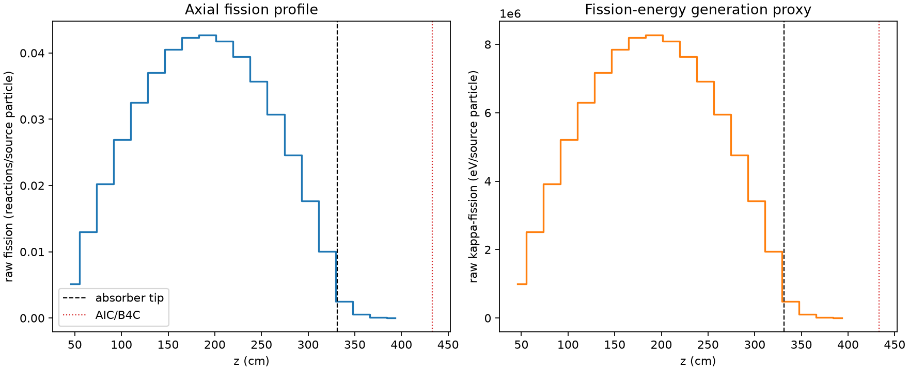
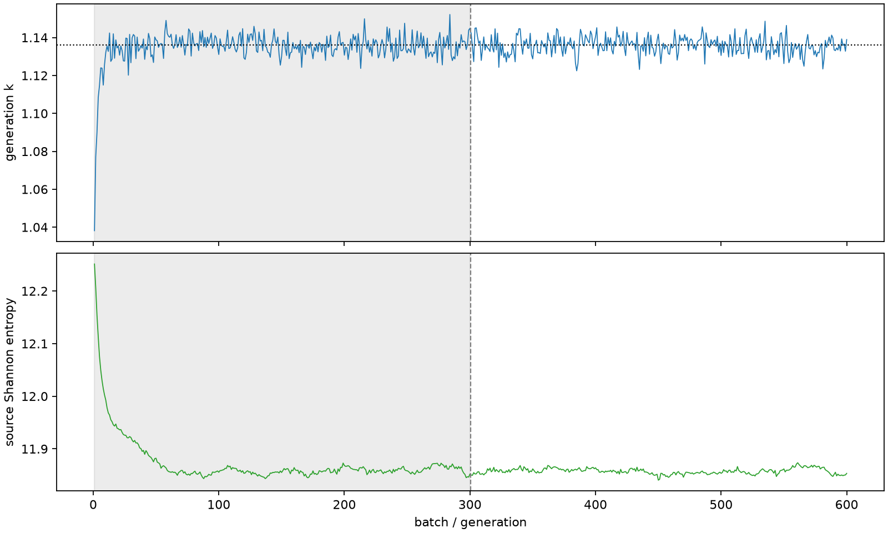

| field | value |
|---|---|
| experiment | V2-ADAPTIVE_01-0020 |
| k | 1.1362181387675956 |
| MC standard error | 0.000185831875481177 |
| seconds | 1031.9062103159958 |
| acceptance | not_assessed |
| convergence | review_required |
Completed is output integrity only; physical and statistical review required. Zero tallies do not prove zero production or zero uncertainty.
| diagnostic | value |
|---|---|
| geometric fuel voxels | 5280 |
| zero fission tally voxels | 0 |
| low signal fuel voxels | 264 |
| low signal fission share | 4.8673681985648204e-05 |
| low signal kappa share | 4.869781213092317e-05 |
| important fission share | 0.9500590673103357 |
| previous filter included | 5016 |
| duration estimate s | 1562.5173488400023 |
| actual minus estimate s | -530.6111385240065 |
| fission relative MC error | statistics |
|---|---|
| all_geometric_fuel | {"voxels": 5280, "positive_mean_voxels": 5280, "zero_mean_voxels": 0, "undefined_relative_error_voxels": 0, "median": 0.009881515773438331, "p95": 0.1983371425868135, "maximum": 0.5290853371029942} |
| low_signal | {"voxels": 264, "positive_mean_voxels": 264, "zero_mean_voxels": 0, "undefined_relative_error_voxels": 0, "median": 0.283572091300183, "p95": 0.38344857541098654, "maximum": 0.5290853371029942} |
| important_95pct | {"voxels": 3596, "positive_mean_voxels": 3596, "zero_mean_voxels": 0, "undefined_relative_error_voxels": 0, "median": 0.00858581765010084, "p95": 0.012878819257132372, "maximum": 0.015156083316994258} |
| outside_previous_filter | {"voxels": 264, "positive_mean_voxels": 264, "zero_mean_voxels": 0, "undefined_relative_error_voxels": 0, "median": 0.283572091300183, "p95": 0.38344857541098654, "maximum": 0.5290853371029942} |
| kappa_fission relative MC error | statistics |
|---|---|
| all_geometric_fuel | {"voxels": 5280, "positive_mean_voxels": 5280, "zero_mean_voxels": 0, "undefined_relative_error_voxels": 0, "median": 0.009869823037932261, "p95": 0.19801544703847512, "maximum": 0.5280234361192966} |
| low_signal | {"voxels": 264, "positive_mean_voxels": 264, "zero_mean_voxels": 0, "undefined_relative_error_voxels": 0, "median": 0.2830719625463097, "p95": 0.3827219671172954, "maximum": 0.5280234361192966} |
| important_95pct | {"voxels": 3596, "positive_mean_voxels": 3596, "zero_mean_voxels": 0, "undefined_relative_error_voxels": 0, "median": 0.008574926407453063, "p95": 0.0128631652175945, "maximum": 0.015137371896469064} |
| outside_previous_filter | {"voxels": 264, "positive_mean_voxels": 264, "zero_mean_voxels": 0, "undefined_relative_error_voxels": 0, "median": 0.2830719625463097, "p95": 0.3827219671172954, "maximum": 0.5280234361192966} |
| axial bin | fission share | kappa-fission share |
|---|---|---|
| 1 | 0.011081541035564281 | 0.011082106285035876 |
| 2 | 0.02800386080583483 | 0.028003856368767073 |
| 3 | 0.04365234518338283 | 0.043652213071697706 |
| 4 | 0.058071111150661936 | 0.05807082695975299 |
| 5 | 0.07020666999856943 | 0.07020650754292061 |
| 6 | 0.07997181553137668 | 0.079971626290633 |
| 7 | 0.08737924755979935 | 0.08737874452858956 |
| 8 | 0.09130935613708593 | 0.09130904374564877 |
| 9 | 0.09207492457447584 | 0.09207477798594657 |
| 10 | 0.090096487414346 | 0.09009630167724805 |
| 11 | 0.08501819942961784 | 0.08501804872602535 |
| 12 | 0.07696875493033413 | 0.07696840636827597 |
| 13 | 0.06631861673319026 | 0.06631836999166113 |
| 14 | 0.053112122778532944 | 0.05311203790227063 |
| 15 | 0.03814865060008688 | 0.038148477309365374 |
| 16 | 0.02171621296280187 | 0.021716309552918724 |
| 17 | 0.005435438833597686 | 0.005437059156750815 |
| 18 | 0.001132382761301794 | 0.0011328764046881416 |
| 19 | 0.0002543812319684694 | 0.00025450523328518834 |
| 20 | 4.788034747097785e-05 | 4.790489851866615e-05 |
Histories include the inactive-to-active transition at batch 300. kappa-fission approximates fission energy production, not total heat deposition.

